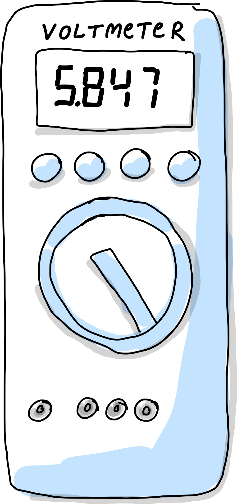
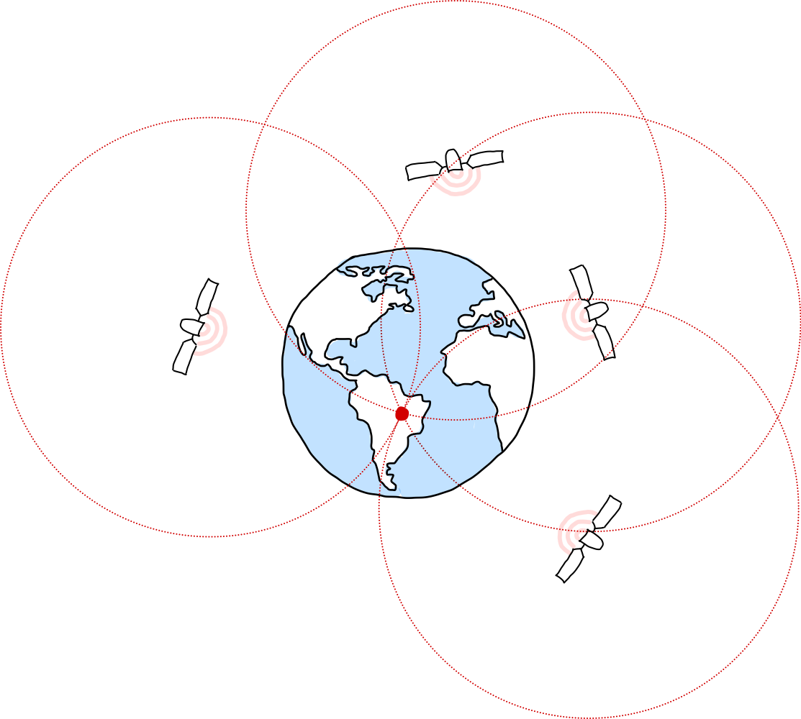
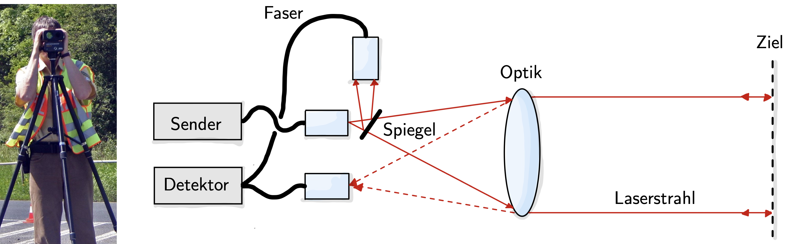
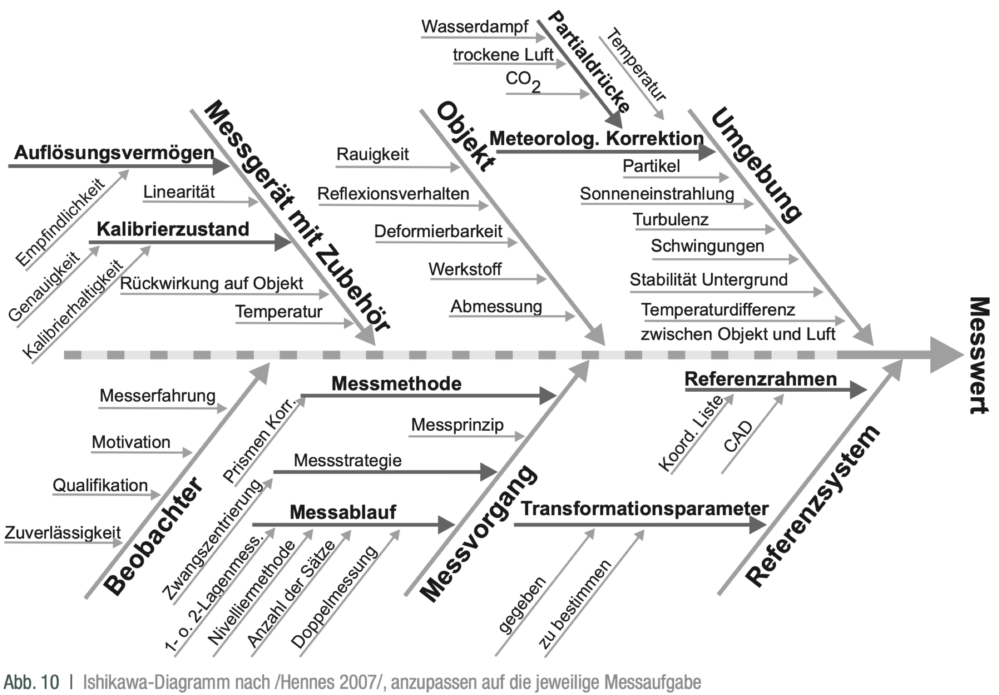

Systematische Messabweichung#
Ein zentrales Ziel des GUM (Guide to the Expression of Uncertainty in Measurement) ist es, auch solche nicht erfassten systematischen Messabweichungen, die nicht korrigiert werden können, in das Gesamtmaß der Messunsicherheit einzubeziehen. Damit soll ein möglichst realistisches und vollständiges Genauigkeitsmaß einer Messung beschrieben werden.
In diesem Kapitel beschäftigen wir uns mit den Quellen systematischer Messabweichungen und diskutieren, wie sich deren Größenordnungen unter verschiedenen Messbedingungen abschätzen lassen.
Ganz allgemein versteht man unter einer systematischen Messabweichung eine einseitige Abweichung eines Messwertes von seinem wahren Wert, deren Ursache prinzipiell bekannt, jedoch nicht exakt quantifizierbar ist. Systematische Effekte wirken also in der Regel konstant oder reproduzierbar in dieselbe Richtung und führen zu einer Verschiebung der Messergebnisse.
Im Gegensatz zu zufälligen Messunsicherheiten, die sich durch Wiederholmessungen statistisch reduzieren lassen, können systematische Abweichungen nicht durch Mittelung verringert werden. Sie lassen sich meist nur identifizieren oder korrigieren, indem
andere Messverfahren mit unterschiedlichen physikalischen Prinzipien eingesetzt oder
die äußeren Bedingungen (z. B. Temperatur, Lage, Druck, elektromagnetische Umgebung) gezielt verändert werden.
So könnte man beispielsweise durch den Einsatz verschiender Messverfahren und Änderungen der Messbedingungen vor Ort systematische Abweichungen aufdecken.
Messgeräteabweichung#
Genauigkeitsklassen#
Messgeräte werden anhand ihrer Genauigkeit in Klassen eingruppiert:
Messgeräte-Kategorie |
Genauigkeits-Klasse (%) |
|---|---|
Präzisions-Messgeräte |
0,001 |
0,002 |
|
0,005 |
|
0,01 |
|
0,05 |
|
Fein-Messgeräte |
0,1 |
0,2 |
|
0,5 |
|
Betriebs-Messgeräte |
1,0 |
1,5 |
|
2,5 |
|
5,0 |
Die Klasse entspricht der relativen Messabweichung. Präzisionsmessgeräte besitzen somit Abweichungen die zwischen 0,001% und 0,05% liegen. Die Genauigkeitsklasse K 2,5 (Angabe auf der Messskala nach DIN EN 60051) bedeutet: Ist der Endwert des eingestellten Messbereichs \(U_\mathrm{end}\), dann beträgt die Messabweichung über den gesamten Messbereich \(a = 0{,}0025\cdot U_\mathrm{end}\). Für \(U_\mathrm{end} = 15\,\mathrm V\) erhält man also \(0{,}0375\,\mathrm V\). Dieser Wert gilt unabhängig davon, wie groß der Zeigerausschlag beim Messgerät ist. Um die relative Abweichung gering zu halten, sollte der Messbereich möglichst so gewählt werden, dass der Messwert am Skalenende abgelesen wird.
Digitalstellenfehler#
{kind=link}

Abb. 21 Voltmeter mit Digitalanzeige.#
Das Gerät im Bild zeigt den Messwert 5,847V an. Laut Hersteller ist die Maximalabweichung (unter Referenzbedingungen) \(a = \pm\) (0,5% vom Messwert + 9 Digit). Die Anzahl der Nachkommastellen (also der Digits) ist in diesem Falle 3, also 0,001V. Genauer kann das Messgerät keine Spannung angeben. Die Messabweichung setzt sich also wiefolgt zusammen (zwei signifikante Stellen reichen hierbei, da der Messwert selber nicht genauer angezeigt wird):
Innerhalb dieses \(\pm\) Bereiches der Breite \(2a\) nimmt man eine Gleichverteilung der Messwerte und bekommt damit die Standardunsicherheit:
Ist nichts weiter bekannt, schätzt man die Unsicherheit über einen Mindestfehler von a = 1 Digit ab.
Show code cell content
import numpy as np
Messwert = 5.847 # in V
Nachkommastellen = 5
A_rel = 0.005 # = 0.5%
Digit = 0.001 # in V
A_total = A_rel * Messwert + 9 * Digit
print('Die Messtoleranz beträgt: +-',round(A_total,Nachkommastellen), 'V = +-', round(A_total*1000,Nachkommastellen), 'mV')
print('Die Unsicherheit beträgt: +-',round(A_total/np.sqrt(3),Nachkommastellen), 'V = +-', round(A_total*1000/np.sqrt(3),Nachkommastellen), 'mV')
Die Messtoleranz beträgt: +- 0.03824 V = +- 38.235 mV
Die Unsicherheit beträgt: +- 0.02207 V = +- 22.07499 mV
Systematische Einflussgrößen beim GPS#
Das Global Positioning System (GPS) bestimmt die Position eines Empfängers durch Laufzeitmessungen von Radiosignalen mehrerer Satelliten. Jeder Satellit sendet ein codiertes Zeitsignal aus, das die Sendezeit und die Satellitenposition enthält. Der Empfänger misst die Ankunftszeit dieses Signals und berechnet daraus die Entfernung zum jeweiligen Satelliten.
Aus den Entfernungen zu mindestens vier Satelliten werden die drei Raumkoordinaten (Breite, Länge, Höhe) sowie der Uhrenfehler des Empfängers bestimmt. Die Positionsbestimmung basiert damit auf der Schnittpunktberechnung mehrerer Kugeloberflächen (Trilateration).
{kind=link}

Abb. 22 Prinzip der GPS-Positionsbestimmung. Vier Satelliten senden Zeitsignale aus, aus deren Laufzeiten der Empfänger auf der Erde seine räumliche Position (Breite, Länge, Höhe) und den Uhrenfehler bestimmt.#
Systematische Messabweichungen entstehen durch physikalische oder technische Einflüsse, die sich regelmäßig und vorhersagbar auf das Messergebnis auswirken. Bei GPS-Messungen lassen sich beispielsweise folgende Hauptursachen unterscheiden:
Laufbahneffekte (Orbitfehler): Unvollständige oder ungenaue theoretische Modelle der Satellitenbahnen führen zu Abweichungen in der berechneten Satellitenposition. Diese Fehler wirken sich direkt auf die Positionsbestimmung des Empfängers aus.
Atmosphärische Störungen: – Die Ionosphäre enthält geladene Teilchen (Ionen und Elektronen), die die Ausbreitungsgeschwindigkeit von Radiowellen beeinflussen. Dadurch entstehen Laufzeit- und Phasenfehler, die orts-, zeit- und frequenzabhängig sind. – In der Troposphäre verursachen meteorologische Einflüsse wie Druck, Temperatur und Feuchte eine zusätzliche Laufzeitverzögerung des Signals. Diese Effekte können modelliert, aber nicht vollständig eliminiert werden.
Mehrwegausbreitung (Multipath): GPS-Signale können durch Reflexionen an Gebäuden, Wasseroberflächen oder anderen Strukturen mehrfach zum Empfänger gelangen. Dadurch entstehen Phasenfehler und Interferenzen, die die Positionsbestimmung verfälschen.
Empfängerbedingte Abweichungen: – Das Signal-zu-Rausch-Verhältnis (SNR) beeinflusst die Präzision der Laufzeitmessung. – Uhrenfehler: GPS-Empfänger verwenden Quarzoszillatoren, deren Genauigkeit begrenzt ist. Eine Abweichung von etwa 60 ns entspricht einem Positionsfehler von - ca. 18m auf Satellitenseite und - bis zu 6000km bezogen auf den GPS-Empfänger.
Atmosphärische Korrektur bei der elektrooptischen Distanzmessung#
Bei der elektrooptischen Distanzmessung wird die Laufzeit oder Phasenverschiebung einer elektromagnetischen Welle (z. B. Laserlicht beim Laserscanning) gemessen, um die Entfernung zu bestimmen.
{kind=link}

Abb. 23 Bei der elektrooptischen Distanzmessung wird die Ausbreitungsgeschwindigkeit der Trägerwelle gemessen.#
Die gemessene Ausbreitungsgeschwindigkeit hängt hierbei von Lufttemperatur, Luftdruck und Luftfeuchte ab, weshalb atmosphärische Korrekturen erforderlich sind.
Für die atmosphärische Korrektur werden Parameter wie Lufttemperatur, Luftdruck und Luftfeuchte in der Regel punktuell am Standort des Messgerätes erfasst.
Diese Messwerte sind jedoch nicht repräsentativ für die gesamte Messstrecke, da sich die atmosphärischen Bedingungen entlang der Visurlinie ändern können.
Eine Abweichung der integralen Lufttemperatur (also der mittleren Temperatur über die gesamte Strecke) von der lokal gemessenen Temperatur führt zu einer systematischen Messabweichung der elektrooptischen Distanzmessung.
Der Beobachter muss daher abschätzen, wie groß die maximale Abweichung zwischen der Punktmessung und der tatsächlichen mittleren Lufttemperatur sein könnte.
Da über die Verteilung dieser Abweichung keine weiteren Informationen vorliegen, wird eine Rechteck- (Gleich-) Verteilung angenommen.
Beispiel: Angenommen, für eine Distanz von 600 m wird eine maximale Temperaturabweichung von
\(\Delta T = \pm 5~\mathrm{K}\) geschätzt.
Bekannt ist, dass sich der Korrekturwert der Distanzmessung um 1 ppm pro 1 K ändert, also 1 mm pro km (1 ppm = part per million, international übliche Angabe für den Faktor \(10^{-6}\)).
Die Halbbreite der Rechteckverteilung beträgt somit:
Die zugehörige Standardunsicherheit ergibt sich für eine Rechteckverteilung zu:
Damit beträgt die Standardunsicherheit infolge der geschätzten Temperaturabweichung etwa 1,7 mm für eine Messstrecke von 600 m.
Show code cell content
delta_T = 5 # maximale Temperaturabweichung in K
delta_z = 1.0 # Korrekturwert pro Kelvin in mm/km
distanz = 0.6 # Distanzmessung in km
a = delta_T * distanz * delta_z
print('Die Halbbreite bzw. systematische Messabweichung beträgt:\t', a, ' mm')
print('Die systematische Messunsicherheit (Gleichverteilung) beträgt:\t', a/np.sqrt(3), ' mm')
Die Halbbreite bzw. systematische Messabweichung beträgt: 3.0 mm
Die systematische Messunsicherheit (Gleichverteilung) beträgt: 1.7320508075688774 mm
Neben atmosphärischen Effekten wirken sich auch weitere systematische Einflüsse auf die Genauigkeit elektrooptischer Distanzmessungen aus.
Brechungsindexänderungen infolge von Luftdichtevariationen entlang der Visurlinie führen zu einer Krümmung des Laserstrahls und damit zu einer Verlängerung der effektiven Laufstrecke. Diese Strahlkrümmung kann insbesondere bei Messungen über große Distanzen oder bei starkem Temperaturgradienten signifikant werden.
Kalibrierfehler entstehen beispielsweise dann, wenn bei der Prüfung von Messsystemen auf einem Komparator die beiden verwendeten Prüfnormale nicht exakt auf einer Geraden liegen. Damit wird das Abbesche Komparatorprinzip verletzt, was zu systematischen Abweichungen in der gemessenen Distanz führt.
Auch analoge Sensorsignale, die teilweise über große Strecken elektrisch übertragen werden, können durch Umwelteinflüsse wie Temperaturänderungen, elektromagnetische Felder oder Spannungsabfälle verzerrt oder gedämpft werden. Diese Effekte führen zu Übertragungsfehlern und beeinflussen die Genauigkeit der gemessenen Werte (siehe Abschnitt Signalübertragung).
Zudem können Vibrationen am Messort lokale Neigungs- oder Richtungsmessungen stören, was insbesondere bei Präzisionsinstrumenten mit optischen oder interferometrischen Komponenten zu fehlerhaften Ergebnissen führen kann.
und weitere…
Ishikawa-Diagramm (Ursache-Wirkungs-Diagramm)#
Bei der Analyse der relevanten Einflussparameter einer Messaufgabe kann das Ishikawa-Diagramm eine hilfreiche Unterstützung bieten. Es dient als Ursache-Wirkungs-Diagramm, mit dem sich potenzielle Fehlerquellen und Einflussfaktoren systematisch erfassen lassen. Ziel ist es, den Zusammenhang zwischen möglichen Ursachen und einer beobachteten Wirkung – beispielsweise einer Messabweichung – übersichtlich darzustellen und eine Prüfung auf Vollständigkeit der betrachteten Einflussgrößen zu ermöglichen.
{kind=link}

Abb. 24 Bild entnommen aus https://www.gik.kit.edu/downloads/[SCHW20]GUM_AVN_Teil1.pdf.#
Das Diagramm wurde von Kaoru Ishikawa entwickelt und wird aufgrund seiner Form auch als Fischgräten-Diagramm bezeichnet. In der Mitte steht der Effekt bzw. das zu erklärende Problem, während die Ursachen entlang der „Gräten“ in Haupt- und Unterkategorien gegliedert werden. Typische Hauptkategorien umfassen etwa:
Mensch (Bedienfehler, Erfahrung, Aufmerksamkeit)
Methode (Messstrategie, Kalibrierverfahren)
Material (Messobjekt, Prüfmittel, Oberflächenbeschaffenheit)
Maschine (Instrumentengenauigkeit, Drift, Justage)
Milieu / Umgebung (Temperatur, Luftdruck, Vibrationen)
Messgröße / Medium (Signalqualität, Rauschen, Übertragungsfehler)
Das Ishikawa-Diagramm liefert jedoch keine vollständige Systematisierung aller Einflüsse, sondern dient vielmehr als strukturierte Denkhilfe, um potenzielle Ursachen zu identifizieren und zu diskutieren. Es muss daher stets an die jeweilige Messaufgabe angepasst werden – beispielsweise im Fall einer elektrooptischen Distanzmessung, bei der sowohl atmosphärische Parameter als auch optische, mechanische und elektronische Einflüsse berücksichtigt werden sollten.
In der messtechnischen Praxis hilft das Ishikawa-Diagramm, systematische und zufällige Fehlerquellen zu unterscheiden, die Relevanz einzelner Einflussgrößen zu bewerten und Messprozesse gezielt zu verbessern. Es unterstützt damit nicht nur die Fehleranalyse, sondern auch die Qualitätssicherung und Unsicherheitsbewertung in modernen Messsystemen.